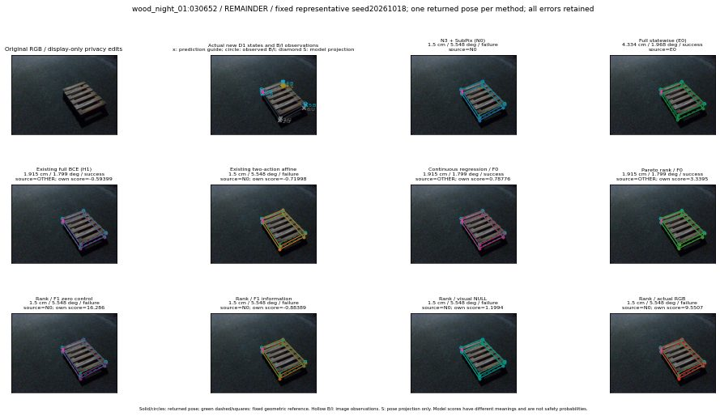

실선은 반환 자세, 초록 점선은 고정 기하 참조입니다. S는 영상 관측이 아닙니다. 점수는 모델별 의미가 다르며 보정된 안전 확률이 아닙니다. 개인정보 처리는 표시 사본에만 적용했습니다.
| 방법·seed | 위치 / 회전 / 공동성공 | 실제 출처 | 선택 후보 | 각 모델 자체 점수 |
|---|---|---|---|---|
| N0 | 1.5 cm / 5.548 deg / failure | N0 | N/A | N/A |
| E0 | 4.334 cm / 1.968 deg / success | E0 | N/A | N/A |
| E0_REGENERATED | 4.334 cm / 1.968 deg / success | E0 | E0_REGENERATED | N/A |
| POSEFIX_SUBPIX_PF_ANCHOR | 1.256 cm / 5.609 deg / failure | OTHER | N/A | N/A |
| POSEFIX_SUBPIX_YOLO_ANCHOR | 1.256 cm / 5.609 deg / failure | OTHER | N/A | N/A |
| D1_H1_MLP_s20261018 | 1.915 cm / 1.799 deg / success | OTHER | WD0/ORIGINAL_WD/selected | -0.5939947366714478 |
| D1_H1_MLP_s20261019 | 1.915 cm / 1.799 deg / success | OTHER | WD0/ORIGINAL_WD/selected | -0.992523193359375 |
| D1_H1_MLP_s20261020 | 1.915 cm / 1.799 deg / success | OTHER | WD0/ORIGINAL_WD/selected | -1.3567886352539062 |
| D1_H1_PAIR_MLP_s20261018 | 1.5 cm / 5.548 deg / failure | N0 | N0 | -1.3922768831253052 |
| D1_H1_PAIR_MLP_s20261019 | 1.5 cm / 5.548 deg / failure | N0 | N0 | -1.5349513292312622 |
| D1_H1_PAIR_MLP_s20261020 | 1.5 cm / 5.548 deg / failure | N0 | N0 | -1.751602053642273 |
| D1_H1_PAIR_ROLE_AFFINE_s20261018 | 1.5 cm / 5.548 deg / failure | N0 | N0 | -0.7199764251708984 |
| D1_H1_PAIR_ROLE_AFFINE_s20261019 | 1.5 cm / 5.548 deg / failure | N0 | N0 | -0.8350092768669128 |
| D1_H1_PAIR_ROLE_AFFINE_s20261020 | 1.5 cm / 5.548 deg / failure | N0 | N0 | -0.5144662261009216 |
| R_CONT_F0_s20261018 | 1.915 cm / 1.799 deg / success | OTHER | WD0/ORIGINAL_WD/selected | 0.7877612709999084 |
| R_CONT_F0_s20261019 | 1.915 cm / 1.799 deg / success | OTHER | WD0/ORIGINAL_WD/selected | 0.8801622986793518 |
| R_CONT_F0_s20261020 | 1.915 cm / 1.799 deg / success | OTHER | WD0/ORIGINAL_WD/selected | 0.781578004360199 |
| R_ORDER_F0_s20261018 | 1.915 cm / 1.799 deg / success | OTHER | WD0/ORIGINAL_WD/selected | 3.3394570350646973 |
| R_ORDER_F0_s20261019 | 1.915 cm / 1.799 deg / success | OTHER | WD0/ORIGINAL_WD/selected | 6.3601861000061035 |
| R_ORDER_F0_s20261020 | 1.915 cm / 1.799 deg / success | OTHER | WD0/ORIGINAL_WD/selected | 3.174752712249756 |
| R_ORDER_F1_ZERO_s20261018 | 1.5 cm / 5.548 deg / failure | N0 | N0 | 16.285951614379883 |
| R_ORDER_F1_ZERO_s20261019 | 1.915 cm / 1.799 deg / success | OTHER | WD0/ORIGINAL_WD/selected | 21.633066177368164 |
| R_ORDER_F1_ZERO_s20261020 | 1.915 cm / 1.799 deg / success | OTHER | WD0/ORIGINAL_WD/selected | 8.936308860778809 |
| R_ORDER_F1_s20261018 | 1.5 cm / 5.548 deg / failure | N0 | N0 | -0.8838885426521301 |
| R_ORDER_F1_s20261019 | 1.5 cm / 5.548 deg / failure | N0 | N0 | 6.873585224151611 |
| R_ORDER_F1_s20261020 | 1.5 cm / 5.548 deg / failure | N0 | N0 | -0.3065240979194641 |
| V_ORDER_NULL_s20261018 | 1.5 cm / 5.548 deg / failure | N0 | N0 | 1.1993513107299805 |
| V_ORDER_NULL_s20261019 | 1.5 cm / 5.548 deg / failure | N0 | N0 | 1.8893516063690186 |
| V_ORDER_NULL_s20261020 | 1.5 cm / 5.548 deg / failure | N0 | N0 | 2.59153151512146 |
| V_ORDER_RGB_s20261018 | 1.5 cm / 5.548 deg / failure | N0 | N0 | 9.550699234008789 |
| V_ORDER_RGB_s20261019 | 1.5 cm / 5.548 deg / failure | N0 | N0 | 1.3223695755004883 |
| V_ORDER_RGB_s20261020 | 1.5 cm / 5.548 deg / failure | N0 | N0 | -11.267956733703613 |